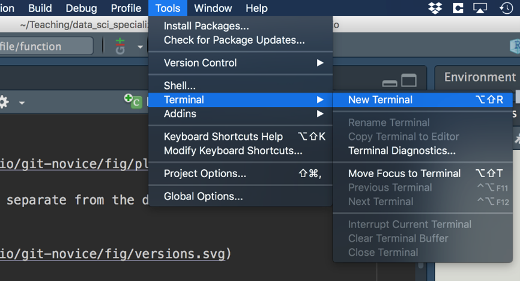
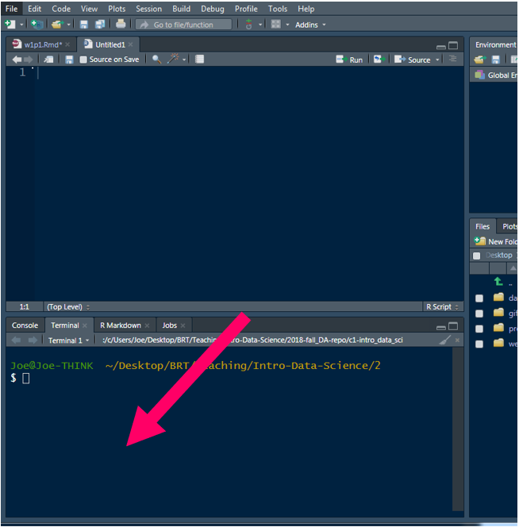
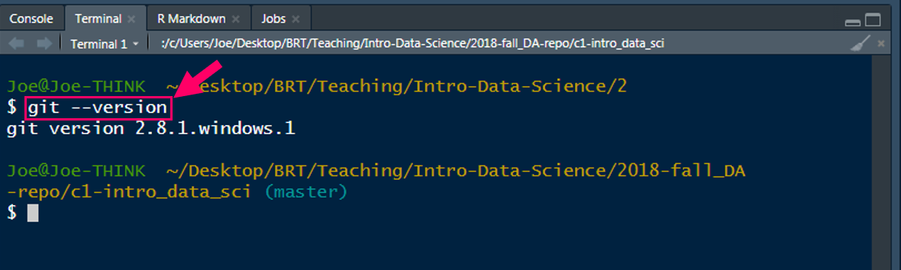
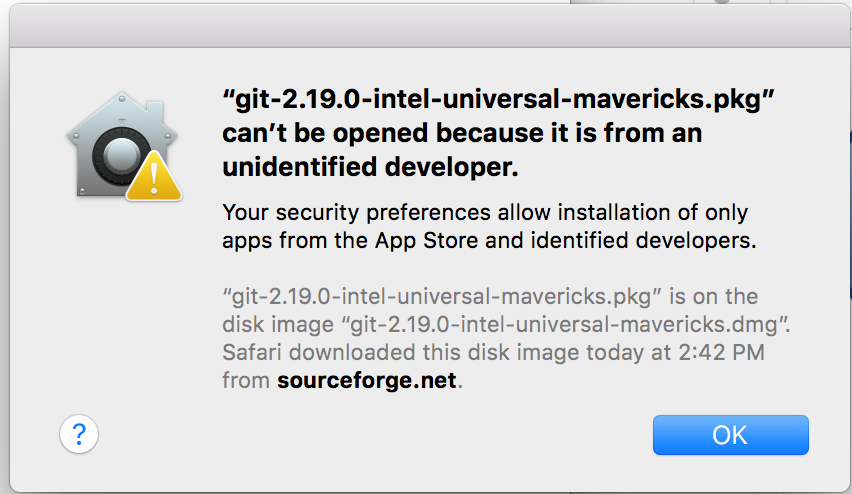
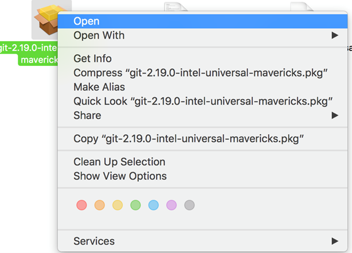
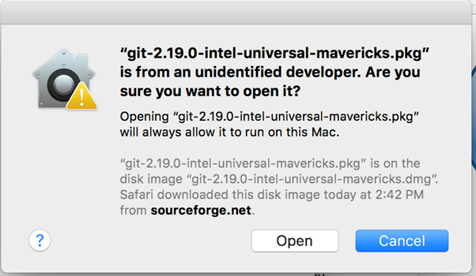

Please complete the following five items before our first class. Instructions for each are below.
R
*Note: If you
have a pre-existing installation of R and/or RStudio, I
strongly recommend that you reinstall both and get as current as
possible. It can often be problematic to run old software.
If you upgrade R, you will need to update any packages
you have installed. The command below should get you started, but you
might also need to specify more arguments if you have been using a
non-default library for your packages.
update.packages(ask = FALSE, checkBuilt = TRUE)
This will only look for updates on CRAN. So if you use a package that
lives only on GitHub or if you want a development version from GitHub,
you will need to update it manually via
devtools::install_github()
Before you register for your free GitHub account, please read this username advice from Jenny Bryan.
Be sure to download the version of Git that is appropriate for your operating system (Mac, Windows, Linux).
That should give you an installer. (If you have a Mac and you’re having a hard time opening the installer, please see below.
Note that Git is not like other software. You will not have an app to launch. To ensure the installation was successful, open RStudio after running the installer, go to:
Tools > Terminal > New Terminal

This will give you a new window down by your console.

Type the following into the terminal, then press enter:
git --version (see highlighted box in image below)

If Git has been installed correctly, you should see output stating the version of Git that is installed on your machine. If you get this output, you are set for when we discuss git. If you do not get similar output please let me know before Week 7. It is critical that everyone be ready to go prior to class Week 7 so we don’t have to waste time in class on installation issues.
If you have a Mac
Your computer will likely not trust the developer and you will get a message like the below when you try to run the installer.

To get around this, you’ll need to right click
(Control + click) on the installer and select “Open”. Then
you’ll be able to open and run the installer.

